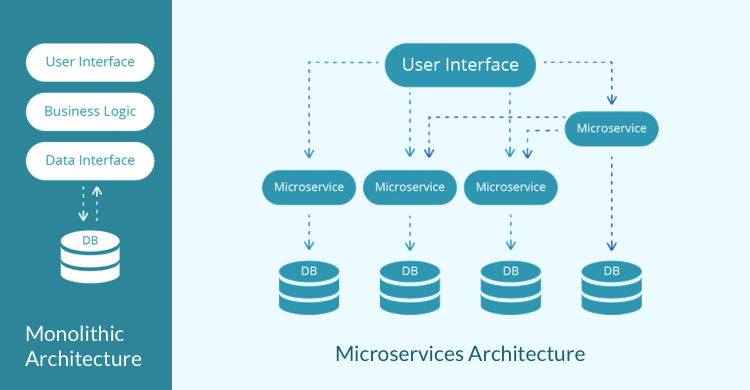

Rifacciamoci alla descrizione che da RedHat sul suo sito:
I microservizi sono un approccio architetturale alla realizzazione di applicazioni.
Quello che distingue l'architettura basata su microservizi dagli approcci monolitici tradizionali
è la suddivisione dell'app nelle sue funzioni di base.
Ciascuna funzione, denominata servizio, può essere compilata e implementata in modo indipendente.
Pertanto, i singoli servizi possono funzionare, o meno, senza compromettere gli altri.
Facciamola semplice e vediamo un esempio: immaginiamoci di essere dei Project manager che lavorano
in una azienda software italiana. Una commessa da una corporation molto grossa, arrivataci circa all'inizio degli anni 90
ci chiede di creare un gestionale per loro.
Secondo quelli che erano i pattern di quegli anni, l'applicazione avrà una struttura monolitica. cosa significa?
Significa che avremmo messo su un server (o magari più di uno) LAMP (Linux, Apache, MySQL, PHP), e creato le nostre applicazioni dentro di essi, ad ogni richiesta di aggiornamento, si testava il tutto, si mandava in produzione il codice
aggiornato, e si procedeva così.
Quali sono i problemi di un approccio simile?
Tanti, anzi, troppi.
Il primo (che riguarda la vostra azienda) è che ogni sviluppo di nuove funzionalità vi
porterà via parecchio tempo.
Ogni rilascio in produzione dovrà essere infatti preceduto da un testing molto accurato, lungo, minuzioso e ben fatto.
Questo porta ai vostri sviluppatori uno stress notevole, e uno sviluppatore stressato non produce, o produce male.
Altro problema non indifferente: per il vostro progetto serviranno dei tester, degli ingegneri di Quality Assurance, e questo significa stipendi in più.
Come glielo spiegate al vostro titolare quando verrà a dirvi che il vostro reparto pesa tantissimo sul budget dell'azienda e che si sta pensando di tagliarlo?
In tutto questo non abbiamo considerato nemmeno l'ipotesi più catastrofica:
cosa facciamo se nonostante tutti i test qualcosa dovesse "spaccare" l'ambiente di produzione?
ovviamente, bisogna spegnere i server, ritornare allo stato precedente, far ripartire le macchine, e ritardare ulteriormente
lo sviluppo. Possiamo permettercelo? Ovviamente no.

Pensa ad una applicazione per una azienda che abbia un e-commerce.
Probabilmente avrai una barra di ricerca per sfogliare i prodotti.
La ricerca costituisce un servizio. Potresti avere anche dei suggerimenti per i prodotti correlati,
che sono basati su un database di preferenze dei clienti.
Anche questo è un servizio. Carrello online con delle variabili di sessione che vengono salvate? Ovviamente è un altro servizio.
Pertanto, un microservizio è una funzione di base di un'applicazione, che viene eseguita indipendentemente
dagli altri servizi.
Quali sono i vantaggi?
Ve ne sono diversi, sia a lungo che a breve termine.
1) E' possibile parallelizzare lo sviluppo di più funzionalità su diversi team, che avranno la possibilità
di doversi concentrare solo su un unico compito, quindi tanti piccoli team, ognuno specializzato, ognuno con un compito più piccolo.
ciò significa completamento più rapido delle commesse, team specializzati, veloci ed efficienti.
2) Ogni servizio è slegato dagli altri.
Significa che un temporaneo malfunzionamento della barra di ricerca del nostro e-commerce di esempio precedente, non manderà
in crash l'intero sistema, ma sarà temporaneamente inutilizzabile fino a quando il team che se ne occupa non lo avrà sistemato, ma il resto del nostro e-commerce
resterà in piedi.
3) Scalabile, sviluppo agile.
Ogni modifica sarà più veloce perchè si andranno a fare delle leggere modifiche solo al servizio corrispondente.
Lo sviluppo di nuove funzionalità sarà più immediato e rapido, inoltre in qualunque momento ognuno dei servizi potrà essere ottimizzato
o potranno essergli allocate più risorse. Il nostro e-commerce cresce molto e ha bisogno di aumentare le risorse perchè i server che si occupano
di immagazzinare le preferenze degli utenti sono sovraccaricati? In qualunque momento possiamo decidere di aumentarne la potenza destinata solo a quel singolo servizio.
Immagina di sviluppare un'applicazione. Lavori su un portatile e il tuo ambiente presenta una configurazione specifica.
Altri sviluppatori potrebbero utilizzare configurazioni leggermente diverse.
L'applicazione che stai sviluppando dipende da tale configurazione, oltre che da specifiche librerie, dipendenze e file.
Al tempo stesso, gli ambienti di sviluppo e produzione della tua azienda presentano
le proprie configurazioni standardizzate con set di file di supporto specifici. Desideri emulare tali
ambienti il più possibile localmente, ma senza tutti i costi derivanti dalla creazione di nuovi ambienti server.
A questo punto, è necessario trovare un modo semplice per far funzionare la tua app in questi ambienti,
superare i controlli qualità e ottenere il deployment,
senza dover riscrivere l'applicazione e correggere errori. In questo caso, i container sono la soluzione ideale.
Il container che ospita la tua applicazione presenta le librerie, le dipendenze e i file necessari,
il che ti consente di passare fino all'ambiente di produzione,
senza alcun impatto negativo. Infatti, il contenuto di un'immagine container può essere paragonato
all'installazione di una distribuzione Linux
poiché include pacchetti,
file di configurazione e così via. La distribuzione di un'immagine container è,
tuttavia, molto più semplice dell'installazione di nuove copie dei sistemi operativi (o di macchine virtuali).
I container consentono di prevenire problemi.
C'è di più: Rispetto alle macchine virtuali, un container Linux in esecuzione utilizza le risorse in modo meno intensivo,
nel primo caso infatti, una macchina virtuale prende delle risorse dal sistema di host per replicare l'hardware ed eseguire un sistema operativo parallelo.
Nel secondo, uno o più container condividono il kernel della macchina ospitante, ma lanciano una serie di processi e demoni completamente isolati dalla macchina ospitante.
Mi rendo conto che tutto questo possa sembrare un argomento complicato (e lo è), ma al netto della teoria, quali sono i vantaggi pratici?
Anzitutto: un consumo minore di risorse e la portabilità, oltre alla semplicità con cui i container possono essere creati e distrutti.
Creare, distruggere o modificare un container Linux è un processo facile e velocissimo, possiamo scegliere di rendere i cambiamenti
effettivi fatti su un container, oppure distruggerlo e ricreare un ambiente completamente nuovo, il tutto in
pochissimi secondi e con due comandi da terminale.
Tutta la potenza e la sicurezza di Linux.
I container sfruttano la potenza di Linux e la sua portabilità, possono esser fatti girare senza alcun problema su qualunque sistema operativo
(anche Mac O Windows), con performance uguali a quelle native della macchina ospitante.
Docker è un progetto open source che permette di gestire container Linux, fonìrnisce delle API molto ad alto livello per
la loro gestione, il vantaggio è che è un software molto leggero scritto in golang, e che si integra perfettamente con tutti i servizi maggiori di cloud hosting mondiali.
Questo ci porta alla conclusione della prima parte!
Abbiamo visto quali sono i vantaggi di una architettura a microservizi, cosa sono i container Linux, i loro vantaggi, e introdotto nella scena un software per la loro gestione. Nei prossimi capitoli, vedremo come scaricare Docker su una macchina Linux,
e prenderemo dimistichezza coi primi comandi.